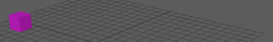
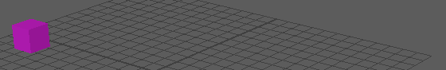

您可以在用户界面中找到使用“时间编辑器”(Time Editor)所需的一切，但是通过属性编辑器(Attribute Editor)可以了解“时间编辑器”(Time Editor)节点的内部，从而公开作为参考提供的内部信息属性以及您可编辑的一些属性。这样深入了解时间编辑器节点对于调试场景和编写脚本非常有用，例如，使用自动化脚本生成“时间编辑器”(Time Editor)节点。
重要： 与使用时间编辑器界面或命令不同，如果通过“属性编辑器”(Attribute Editor)编辑“时间编辑器”(Time Editor)属性，不会执行验证。
片段(Clip)
在时间编辑器中选择一个片段，然后打开“属性编辑器”(Attribute Editor)可访问以下选项。
- 片段(Clip)
-
- 片段 ID(Clipid)
- 显示选定片段的 ID 编号的引用条目。
注： 请勿修改此设置。
- 片段名称(Clip Name)
- 显示选定片段的名称。在此字段中输入一个新名称可重命名片段。
- 片段类型(Clip Type)
- 用于定义选定片段是音频片段还是动画片段。
注： 请勿修改此设置。
- 片段开始(Clip Start)
- 片段开始时间以父时间表示，即：以相对于父片段开头（以父单位表示）的帧数表示。例如，如果父片段放大 10 倍，则单帧父片段将持续 10 个绝对帧。如果涉及的子片段放置在第 10 个绝对帧处，则它位于以父单位表示的第 1 帧处，因此起点 = 1。
- 片段持续时间(Clip Duration)
- 用于指定片段的长度。持续时间以片段的本地单位表示。例如，如果片段的长度为 5 帧，这意味着可以通过缩放或扭曲拉伸其 5 帧内容。
- 片段比例(Clip Scale)
- 用于根据输入的值加快或减慢片段速度。
- 时间扭曲/时间扭曲类型(Time Warped/Time Warp Type)
- 激活“时间扭曲”(Time Warp)可重定时片段。选择“时间扭曲”(Time Warp)或“速度曲线”(Speed Curve)可指定所需的重定时类型。有关“时间编辑器”(Time Editor)时间扭曲和速度曲线的信息，请参见在时间编辑器中重定时动画。
注： 若要该设置生效，必须将曲线连接到 aSpeedInput 属性。只有这样，如果选中了 aTimeWarped，才会考虑该设置。
- 之前的片段循环/之后的片段循环(Clip Loop Before/Clip Loop After)
- 循环区域用片段的倍数表示，例如：x2、x5、x1.23，依此类推。设置为 0 时表示无循环。
- 之前的片段循环模式/之后的片段循环模式(Clip Loop Before Mode/Clip Loop After Mode)
-
用于控制循环区域的行为方式：
-
- 周期循环
-

- 当第一帧和最后一帧在循环中匹配时。此模式可用于重复的动作，例如，角色挥手。这是时间编辑器的默认循环。请参见时间编辑器中的循环类型。
- 逐行
-

- 重复动画，但也会对每个循环周期应用偏移，从而沿相应路径逐渐向前推移动画。借助此类循环，您可以通过一个简短动画创建循环行走。 请参见使用“渐进”(Progressive)循环创建循环行走。
- 按住
- 在片段的最后一个值上冻结，这意味着片段不能在给定结尾处同时循环和保持，但您可以分别在片段开头和结尾控制循环。
- 之前的片段保持/之后的片段保持(Clip Hold Before/Clip Hold After)
- 用于指定片段保持的起点和终点。如果使用上述选项将循环定义为保持，则此属性将确定保持长度（与 aClipLoopBefore/After 相反）。这是因为保持按帧数定义；这样，修剪片段将不会影响保持的持续时间，而循环则成倍地定义。此外，修剪片段还会使循环变短，因为要重复的片段更少。
- 有关保持片段的说明，请参见在时间编辑器中编辑动画。
- 片段已禁用(Clip Muted)
- 禁用选定片段。
注： 建议您改为使用时间编辑器片段(Clip)上下文菜单禁用片段。
- 片段颜色/使用片段颜色(Clip Color/Use Clip Color)
- 可用于为选定片段设置新颜色。
- 曲线起点(Curve Start)
- 此设置将相对于片段的第 0 帧向前或向后偏移片段内的动画，例如，偏移为 1 时会将动画向前偏移 1 帧。
- 删除(Delete)

- 删除片段
轨迹
在时间编辑器中选择一个片段，打开“属性编辑器”(Attribute Editor)，然后单击“合成”(Composition)选项卡可访问轨迹选项。
- 添加新项目(Add New Item)
- 轨迹(Track)
-
- 食趾(Index)
- 表示轨迹的 0 型索引，用于控制给定级别的轨迹顺序。“轨迹”(Track)节点包含给定范围内的轨迹列表，如合成，而不仅仅是单个轨迹。预期的情况是，给定节点中的所有轨迹都将具有唯一的 0 型索引，范围是从 0 到 n-1（其中，n 表示轨迹数），因此如果存在 4 个轨迹，它们应有索引 0、1、2、3。
- 类型(Type)
- 用于将指定轨迹定义为音频或动画轨迹。
- 轨迹名称(Track Name)
- 显示指定轨迹的名称。在此字段中输入一个新名称可重命名轨迹。
- 轨迹已禁用/轨迹单放(Track Muted/Track Solo)
- 暂时禁用/隔离指定轨迹。
注： 建议不要通过这种方式禁用轨迹。请改用 -soloTrack 命令，因为它可以正确设置 TE 的其他节点。应该使用时间编辑器轨迹(Track)上下文菜单中的“禁用”(Mute)或“单放”(Solo)选项。.
- 轨迹重影(Track Ghost)
- 允许您为轨迹上的动画对象创建简化表示，用来预览每个片段的影响。请参见在时间编辑器中查看轨迹重影。
- 轨迹单放/禁用(Track Solo/Mute)
- 平移高度(Track Height)
- 用于规定指定轨迹的高度。默认值为 32。
- 使用轨迹颜色/轨迹颜色(Use Track Color/Track Color)
- 可用于为指定轨迹设置新颜色。
- 删除(Delete)
- 从“时间编辑器”(Time Editor)中移除指定轨迹。
注： 动画源仍保留在场景中。可以在大纲视图中或时间编辑器菜单栏的时间编辑器“源”(Source)菜单中找到该选项。
- 片段(Clip)
- 此设置仅供内部使用。列出此轨迹节点所属（可选）的组片段。
- 合成(Composition)
- 此设置仅供内部使用。如果轨迹节点表示合成，则该栓将连接到 timeEditor 节点。轨迹节点的名称就是合成的名称。
- 请参见通过时间编辑器合成创建多个动画故事。
- 父时间(Parent Time)
- 此设置仅供内部使用。
- Crossfade
- 列出为此范围中的轨迹上的片段定义的自定义 crossfade。在片段 crossfade 区域上单击鼠标右键并从时间编辑器片段(Clip)上下文菜单中选择“Crossfade”时，可以定义两个片段之间的自定义 crossfade。该属性将多次输入片段对和 crossfade 信息。